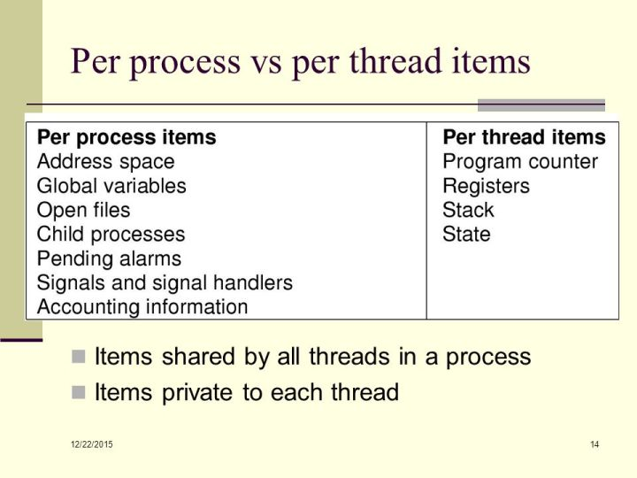
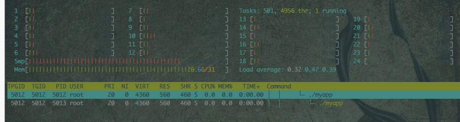
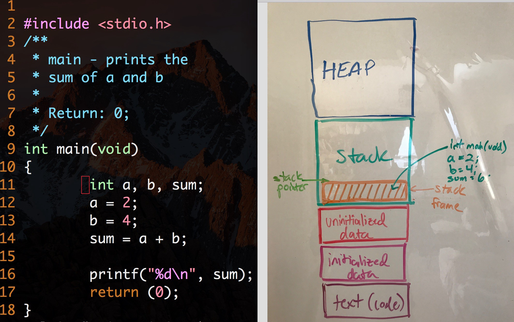
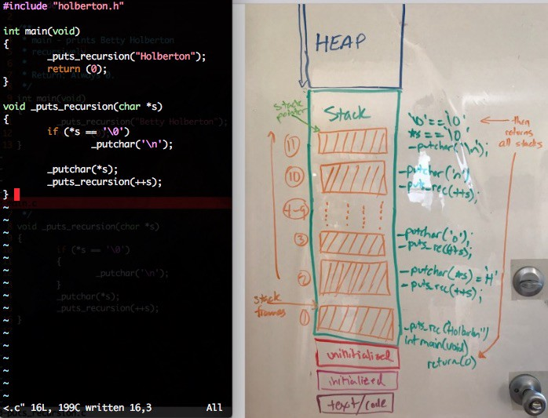
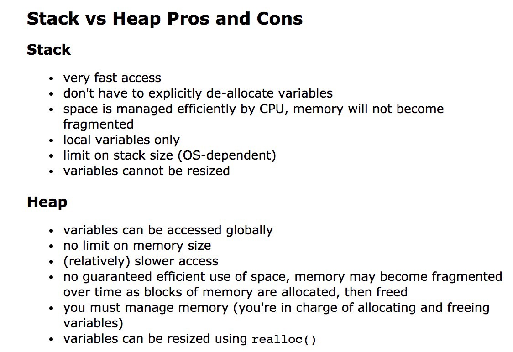
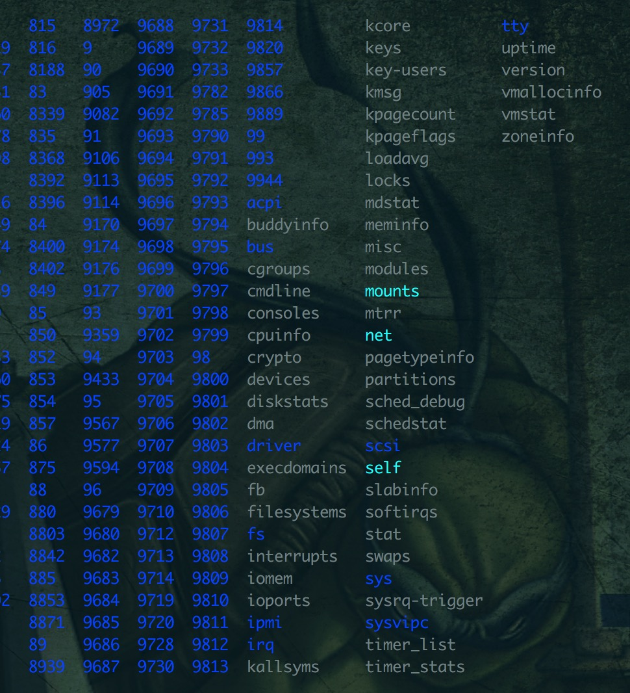
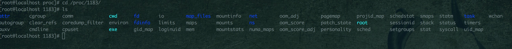

进程和线程的区别
内存怎么分配？什么是堆，什么是栈？进程创建的时候都需要哪些资源？线程的创建都需要哪些资源？
在 Linux 中，无论是创建进程（fork）还是线程（pthread_create），根本上是 clone 一个已存在的 task（进程|线程）实现的，二者的差别就在于 clone 时 Flags 的传递，当 CLONE_VM 位设置时（共享地址空间），创建线程；当该位未设置时，创建进程。
当 pthread_create 传递 CLONE_* Flags，告诉内核不需要拷贝 the virtual memory image, the open files, the signal handlers 等，可以节省时间。
下面摘自 Launching Linux threads and processes with clone，感觉翻译的还是没有直接读原文来的顺 -_-||
For processes, there's a bit of copying to be done when fork is invoked, which costs time. The biggest chunk of time probably goes to copying the memory image due to the lack of CLONE_VM. Note, however, that it's not just copying the whole memory; Linux has an important optimization by using COW (Copy On Write) pages. The child's memory pages are initially mapped to the same pages shared by the parent, and only when we modify them the copy happens. This is very important because processes will often use a lot of shared read-only memory (think of the global structures used by the standard library, for example).
如下图可以看到线程和进程所占用的资源：
 —— Modern Operating Systems
在 Linux 中，共享内存的 task 可以被看做是同一进程下的不同线程。从内核的角度来讲，每一个 task 都具有一个 PID(Process IDentifier)，注意这里，同一进程下的线程拥有不同的 PID！。 此外，每一个 task 还具有 TGID（Task Group ID)，同一进程下的线程 TGID 相同，这个 TGID 即是我们通常意义下的 PID。
User VIEW
<-- PID 43 --> <----------------- PID 42 ----------------->
+---------+
| process |
_| pid=42 |_
_/ | tgid=42 | \_ (new thread) _
_ (fork) _/ +---------+ \
/ +---------+
+---------+ | process |
| process | | pid=44 |
| pid=43 | | tgid=42 |
| tgid=43 | +---------+
+---------+
<-- PID 43 --> <--------- PID 42 --------> <--- PID 44 --->
KERNEL VIEW
总结一下，在经典的进程、线程模型中（支持 kernel-level threads 的现代 Unix）：
- 进程是资源的容器，包含（一个或）多个线程。
- 内核调度的基本单位是线程、而非进程。
- 同一进程下的各个线程共享资源（address space、open files、signal handlers，etc），但寄存器、栈、PC 等不共享;
fork
fork 创造的子进程复制了父进程的 task_struct，系统堆栈空间和页面表，这意味着下面的程序，我们没有执行 count++前，其实子进程和父进程的 count 指向的是同一块内存。而当子进程改变了变量时候（即对变量进行了写操作），会通过 copy_on_write 的手段为所涉及的页面建立一个新的副本。
写入时复制(Copy-on-write) 是一个被使用在程式设计领域的最佳化策略。其基础的观念是，如果有多个呼叫者(callers)同时要求相同资源，他们会共同取得相同的指标指向相同的资源，直到某个呼叫者(caller)尝试修改资源时，系统才会真正复制一个副本(private copy)给该呼叫者，以避免被修改的资源被直接察觉到，这过程对其他的呼叫只都是通透的(transparently)。此作法主要的优点是如果呼叫者并没有修改该资源，就不会有副本(private copy)被建立。
#include <stdio.h> // 提供打印语句
#include <stdlib.h> // 提供EXIT_SUCCESS
#include <sys/types.h>
#include <unistd.h> // 提供系统调用
int main(void)
{
int count = 1;
int child;
child = fork();
printf("%d\n", getpid());
if (child < 0)
{
perror("fork error : ");
}
else if (child == 0)
{
// This is father, his count is: 1 (0x7fff8f49d6a8), his pid is: 7
printf("This is son, his count is: %d (%p). and his pid is: %d\n", ++count, &count, getpid());
}
else
{
// This is son, his count is: 2 (0x7fff8f49d6a8). and his pid is: 8
printf("This is father, his count is: %d (%p), his pid is: %d\n", count, &count, getpid());
}
return EXIT_SUCCESS;
}
exec 用一段新的程序来替代整个进程，fork 通常和 exec 一起使用来创建一个新的子进程。 直接 fork 的话子进程会和父进程共享相同的代码段，如上面的代码子进程也会将整个代码段执行一遍。
#include <errno.h>
#include <stdio.h>
#include <stdlib.h>
#include <string.h> // correct header
#include <sys/types.h>
#include <sys/wait.h>
#include <unistd.h> // 提供系统调用
char command[256];
// docker run --rm -v "$PWD":/usr/src/myapp -w /usr/src/myapp gcc gcc -o myapp exec.c
// docker run -it --rm -v "$PWD":/usr/src/myapp -w /usr/src/myapp gcc sh -c "./myapp"
// 如果没有 exec，直接 fork，父子进程共用代码段，会执行一样的代码
// 如果在 fork 里面接着调用 exec，则子进程只会执行 exec 里面的代码
int main()
{
int rtn; /*子进程的返回数值*/
while (1)
{
/* 从终端读取要执行的命令 */
printf(">");
fgets(command, 256, stdin);
command[strlen(command) - 1] = 0;
if (fork() == 0)
{ /* 子进程执行此命令 */
// https://unix.stackexchange.com/questions/187666/why-do-we-have-to-pass-the-file-name-twice-in-exec-functions
// 必须传递一个参数作为 argv[0]
execlp(command, "hello", NULL);
/* 如果exec函数返回，表明没有正常执行命令，打印错误信息*/
perror(command);
exit(errno);
}
else
{ /* 父进程， 等待子进程结束，并打印子进程的返回值 */
wait(&rtn);
printf(" child process return %d\n", rtn);
}
}
return EXIT_SUCCESS;
}
clone
clone() is the syscall used by fork(). with some parameters, it creates a new process, with others, it creates a thread. the difference between them is just which data structures (memory space, processor state, stack, PID, open files, etc) are shared or not.
/* pid_t *parent_tid, void *tls, pid_t *child_tid */
int clone(int (*fn)(void *), void *stack, int flags, void *arg)
fn函数指针，clone 需要一个函数指针来运行stack用来设置创建的 task 的 stack 大小flags- SIGCHLD 子 process 终止时，应该发送 SIGCHLD 信号给父 process
- CLONE_VM 父子 process
arg传递给子进程的参数
如何创建进程
除了使用 fork 的方式，还可以直接使用 clone。
Modern Unix design：
- Copy On Write: Allow both the parent and the child to read the same physical pages. Whenever either one tries to write on a physical page, the kernel copies its contents into a new physical page that is assigned to the writing process.
- Lightweight process: Allow both the parent and the child to share many per-process kernel data structures, such as the paging tables (and therefore the entire User Mode address space), the open file tables, and the signal dispositions.
- vfork() system call: Create a process that shares the memory address space of its parent. To prevent the parent from overwriting data needed by the child, the parent’s execution is blocked until the child exits or executes a new program.
#define _GNU_SOURCE
#include <sched.h>
#include <stdio.h>
#include <stdlib.h>
#include <sys/wait.h>
int fn(void *arg)
{
printf("\nINFO: This code is running under child process.\n");
int i = 0;
int n = atoi(arg);
for (i = 1; i <= 10; i++)
printf("%d * %d = %d\n", n, i, (n * i));
printf("\n");
return 0;
}
void main(int argc, char *argv[])
{
printf("Hello, World!\n");
void *pchild_stack = malloc(1024 * 1024);
if (pchild_stack == NULL)
{
printf("ERROR: Unable to allocate memory.\n");
exit(EXIT_FAILURE);
}
// 线程分配的栈大小
int pid = clone(fn, pchild_stack + (1024 * 1024), SIGCHLD, argv[1]);
if (pid < 0)
{
printf("ERROR: Unable to create the child process.\n");
exit(EXIT_FAILURE);
}
wait(NULL);
free(pchild_stack);
printf("INFO: Child process terminated.\n");
}
如何创建线程
linux 创建的 threads，底层其实是系统调用 clone 产生的 child processes。线程也有自己的 pid（其实称之为 TID 后者 thread ID 更好），线程和创建线程的进程有相同的 TGID（task group id）。
TGID 和进程 ID 相同，我觉得可以给进程和里面的线程都称之为 task，进程是 main task，他们拥有相同的 TGID，内核调度的基本单位是线程而非进程，进程只需要负责管理资源，这些资源由同一进程下的线程共享。
线程也叫 Lightweight process，也可以通过 ps -L -p progress_id 可以查看进程里面的所有线程。
下图是通过 htop -p 5012 查看进程信息。

下面是创建线程时，传递给 clone 的参数：
- CLONE_THREAD the child is placed in the same thread group as the calling process.
- CLONE_SIGHAND he calling process and the child process share the same table of signal handlers.
- CLONE_FS the caller and the child process share the same file system information
- CLONE_VM the calling process and the child process run in the same memory space
- CLONE_FILES the calling process and the child process share the same file descriptor table.
#include <stdio.h>
#include <stdlib.h>
#include <unistd.h>
#define _SCHED_H 1
#define __USE_GNU 1
#include <bits/sched.h>
#define STACK_SIZE 4096
int func(void *arg)
{
printf("Inside func.\n");
sleep(200);
printf("Terminating func...\n");
return 0;
}
int main()
{
// getpid() 返回的是 TGID
printf("This process pid: %u\n", getpid());
char status_file[] = "/proc/self/status";
void *child_stack = malloc(STACK_SIZE);
int thread_pid;
printf("Creating new thread...\n");
// 创建线程
thread_pid = clone(&func, child_stack + STACK_SIZE, CLONE_SIGHAND | CLONE_FS | CLONE_VM | CLONE_FILES | CLONE_THREAD, NULL);
printf("Done! Thread pid: %d\n", thread_pid);
FILE *fp = fopen(status_file, "rb");
printf("Looking into %s...\n", status_file);
while (1)
{
char ch = fgetc(fp);
if (feof(fp))
break;
printf("%c", ch);
}
fclose(fp);
getchar();
return 0;
}
Stack vs Heap
The memory that is assigned to a program or application in a computer can be divided into five parts. The amount of memory that get’s assigned to an application depends on the computer’s architecture and will vary across most devices, but the variable that remains constant is the five parts of an application’s memory which are the heap, stack, initialized data segment, uninitialized data segment, and the text segment.

- text segment 又称代码段，主要是代码编译成的机器指令，通常是只读的
- initialized data segment 包含所有的全局和静态变量
- uninitialized data segment 包含所有被初始化为零值的全局和静态变量
The stack is a segment of memory where data like your local variables and function calls get added and/or removed in a last-in-first-out (LIFO) manner.
- The main function and all the local variables are stored in an initial frame.
main()方法和所有的本地变量存放在初始栈帧里面

- 在程序里面进行多次函数调用，会生成多个 stack frames。Every time a new stack frame is created, the stack pointer moves with it until it reaches the terminating condition.在递归调用里面，如果没有结束标识，很快就会出现 stack overflow。可以通过 ulimit -a 查看栈的最大值

- The main function and all the local variables are stored in an initial frame.
heap 通过
malloc()调用从堆上分配内存，参见 内存章节参见 CPU 和 Kernal 内存 一节。操作堆的函数主要有 malloc、realloc、calloc 和 free。The heap is the segment of memory that is not set to a constant size before compilation and can be controlled dynamically by the programmer. Think of the heap as a “free pool” of memory you can use when running your application. The size of the heap for an application is determined by the physical constraints of your RAM (Random access memory) and is generally much larger in size than the stack.

The stack frame, also known as activation record is the collection of all data on the stack associated with one subprogram call.
/proc
/proc 是一个虚拟文件目录。This special directory holds all the details about your Linux system, including its kernel, processes, and configuration parameters. Although almost all the files are read-only, a few writable ones (notably in /proc/sys) allow you to change kernel parameters.

/proc/meminfo获取内存信息/proc/cpuinfo获取 cpu 信息/proc/version获取内核版本/proc/devicesDisplays all currently configured and loaded character and block devices./proc/mountsShows all the mounts used by your machine (its output looks much like /etc/mtab)/proc/self/表示当前打开的进程，比如我们在程序可以通过/proc/self获取当前进程信息。/proc/<number>/number 表示进程 PID
进程
下面以我本机启动的一个服务来详细的介绍 /proc 这个目录

[root@localhost cwd]# lsof -p 1183
COMMAND PID USER FD TYPE DEVICE SIZE/OFF NODE NAME
main 1183 root cwd DIR 8,3 4096 31064716 /srv/cdts/survey-service/bin
main 1183 root rtd DIR 8,3 4096 2 /
main 1183 root txt REG 8,3 15937112 31081887 /srv/cdts/survey-service/bin/main
main 1183 root 0u CHR 136,4 0t0 7 /dev/pts/4 (deleted)
main 1183 root 1u CHR 136,4 0t0 7 /dev/pts/4 (deleted)
main 1183 root 2u CHR 136,4 0t0 7 /dev/pts/4 (deleted)
main 1183 root 3u IPv6 622084018 0t0 TCP *:avt-profile-2 (LISTEN)
main 1183 root 4u a_inode 0,10 0 8330 [eventpoll]
main 1183 root 5u IPv6 622084094 0t0 TCP localhost.localdomain:avt-profile-2->localhost.localdomain:33862 (ESTABLISHED)
- cwd 指向当前进程运行目录的符号链接，对应上面第一行
- cmdline 启动当前进程的完整命令，对应上面第三行
- fd 当前进程打开的每一个文件的文件描述符，对应上面的 FD 从 0u 开始
- environ 当前进程的环境变量列表
- exe 指向当前进程可执行文件的符号链接
- limits 当前进程使用的资源限制
- status 与 stat 提供的信息类似，当前进程的详细信息
- statm 当前进程占用内存状态信息
- task 目录文件，当前进程运行的每一个线程的相关信息，每个线程的相关信息保存在一个由线程号命名的目录中
参考
Stack vs Heap. What’s the difference and why should I care?
Launching Linux threads and processes with clone
If threads share the same PID, how can they be identified?